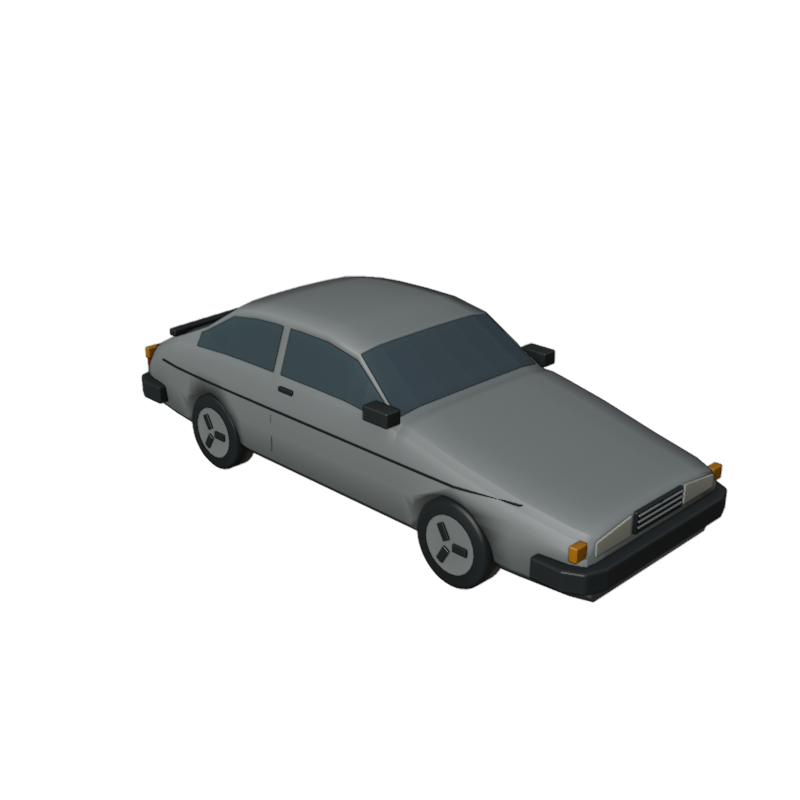

Loading the review…
Complete Saab 900 Classic candidate. Geometry and GLB reimport checks pass; human visual approval remains pending.
Hood verification · before / after
Tre granskningssteg och fem slutvyer
Blender, GLB och reproducerbara skript
7 822 trianglar, 8 material. Ingen spelintegration. Fysisk iPad/Safari-prestanda ej verifierad.